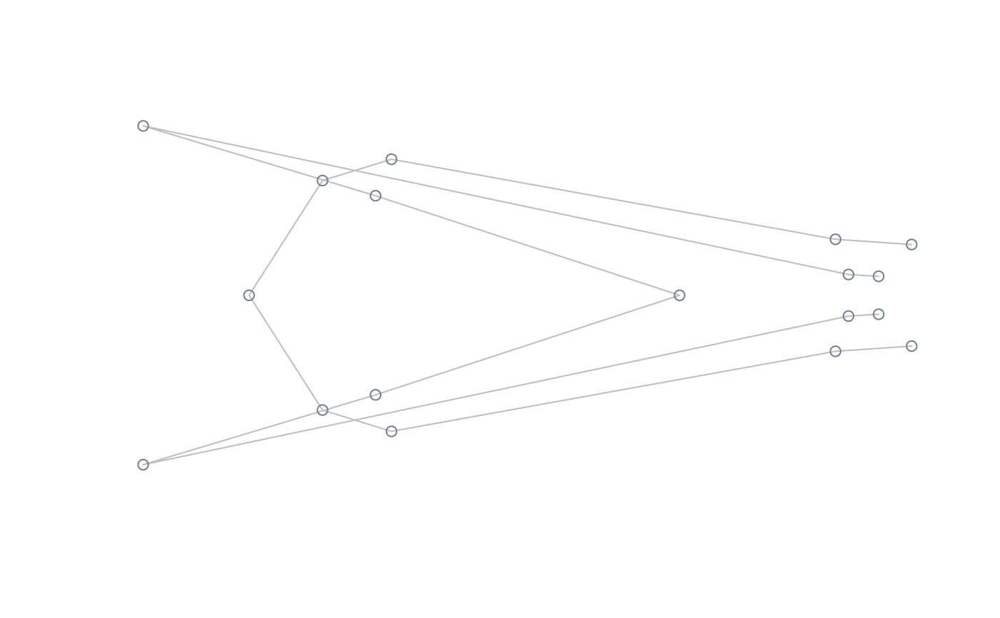
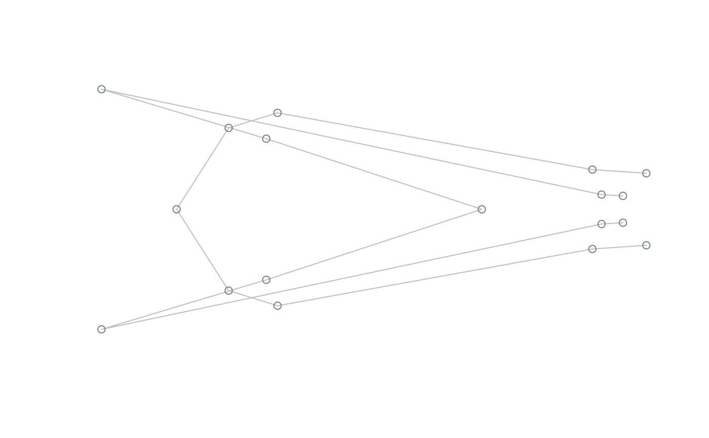

Compute shapes at the extremes of a morphometric axis
Source:R/shapes_operations.R
ax_transformation.RdThis function computes the theoretical shapes corresponding to the extremes of a morphometric axis, which can be supplied as an object containing a linear model or a multivariate ordination analysis.
ax_transformation(obj, axis = 1, mag = 1)Arguments
- obj
An object containing either a multivariate ordination of class
"prcomp", "bg_prcomp", "phy_prcomp", "pls_shapes"or"phy_pls_shapes"or a"mlm"object fitted usinglm().- axis
An optional numeric value specifying the axis of the multivariate ordination which is to be represented.
- mag
Numeric; magnifying factor for representing shape transformation.
Value
A 2-margins matrix, of dimensions 2 x (k x p) for the case of
landmark data and 2 x (4 x nb.h) for the case of Fourer data (where
nb.h is the number of harmonics used in elliptic Fourier analysis).
Details
If an object of class mlm fitting shape to a factor (only two
levels allowed) is supplied in obj, magnification of the axis range
is attained through bgPCA.
References
MacLeod, N. (2009). Form & shape models. Palaeontological Association Newsletter, 72(620), 14-27.
See also
Examples
#load tail data and packages
library(geomorph)
data("tails")
shapes <- tails$shapes
links <- tails$links
#perform PCA, compute and plot extreme shapes of PC1 at its natural range
pca <- prcomp(two.d.array(shapes))
extshapes2d <- ax_transformation(obj = pca, axis = 1, mag = 1)
extshapes <- arrayspecs(extshapes2d, k = ncol(shapes), p = nrow(shapes))
pile_shapes((extshapes), links = links, mshape = FALSE)
 #compute and plot extreme shapes of PC2 at its natural range
extshapes2d <- ax_transformation(obj = pca, axis = 2, mag = 1)
extshapes <- arrayspecs(extshapes2d, k = ncol(shapes), p = nrow(shapes))
pile_shapes(extshapes, links = links, mshape = FALSE)
#compute and plot extreme shapes of PC2 magnified x2
extshapes2d <- ax_transformation(obj = pca, axis = 2, mag = 2)
extshapes <- arrayspecs(extshapes2d, k = ncol(shapes), p = nrow(shapes))
pile_shapes(extshapes, links = links, mshape = FALSE)
#perform lm of shape on size, compute and plot extreme shapes at its natural range
model <- lm(two.d.array(tails$shapes) ~ log(tails$sizes))
extshapes2d <- ax_transformation(obj = model, mag = 1)
extshapes <- arrayspecs(extshapes2d, k = ncol(shapes), p = nrow(shapes))
pile_shapes(extshapes, links = links, mshape = FALSE)

#perform lm of shape on size, compute and plot extreme shapes at its natural range
model <- lm(two.d.array(tails$shapes) ~ tails$data$sex)
extshapes2d <- ax_transformation(obj = model, mag = 1)
extshapes <- arrayspecs(extshapes2d, k = ncol(shapes), p = nrow(shapes))
pile_shapes(extshapes, links = links, mshape = FALSE)
#perform lm of shape on size, compute and plot extreme shapes magnified x2
model <- lm(two.d.array(tails$shapes) ~ tails$data$sex)
extshapes2d <- ax_transformation(obj = model, mag = 2)
extshapes <- arrayspecs(extshapes2d, k = ncol(shapes), p = nrow(shapes))
pile_shapes(extshapes, links = links, mshape = FALSE)
#compute and plot extreme shapes of PC2 at its natural range
extshapes2d <- ax_transformation(obj = pca, axis = 2, mag = 1)
extshapes <- arrayspecs(extshapes2d, k = ncol(shapes), p = nrow(shapes))
pile_shapes(extshapes, links = links, mshape = FALSE)
#compute and plot extreme shapes of PC2 magnified x2
extshapes2d <- ax_transformation(obj = pca, axis = 2, mag = 2)
extshapes <- arrayspecs(extshapes2d, k = ncol(shapes), p = nrow(shapes))
pile_shapes(extshapes, links = links, mshape = FALSE)
#perform lm of shape on size, compute and plot extreme shapes at its natural range
model <- lm(two.d.array(tails$shapes) ~ log(tails$sizes))
extshapes2d <- ax_transformation(obj = model, mag = 1)
extshapes <- arrayspecs(extshapes2d, k = ncol(shapes), p = nrow(shapes))
pile_shapes(extshapes, links = links, mshape = FALSE)

#perform lm of shape on size, compute and plot extreme shapes at its natural range
model <- lm(two.d.array(tails$shapes) ~ tails$data$sex)
extshapes2d <- ax_transformation(obj = model, mag = 1)
extshapes <- arrayspecs(extshapes2d, k = ncol(shapes), p = nrow(shapes))
pile_shapes(extshapes, links = links, mshape = FALSE)
#perform lm of shape on size, compute and plot extreme shapes magnified x2
model <- lm(two.d.array(tails$shapes) ~ tails$data$sex)
extshapes2d <- ax_transformation(obj = model, mag = 2)
extshapes <- arrayspecs(extshapes2d, k = ncol(shapes), p = nrow(shapes))
pile_shapes(extshapes, links = links, mshape = FALSE)